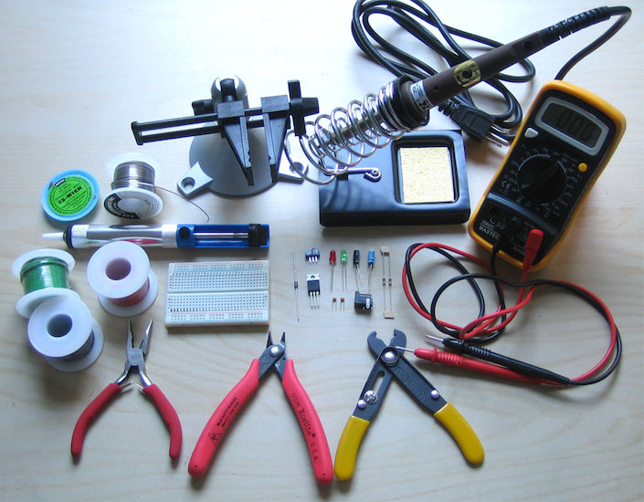
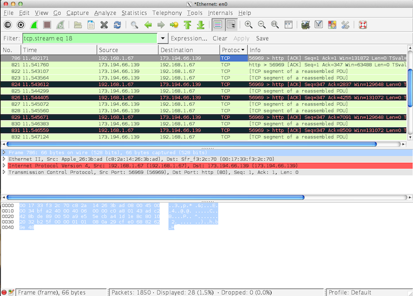
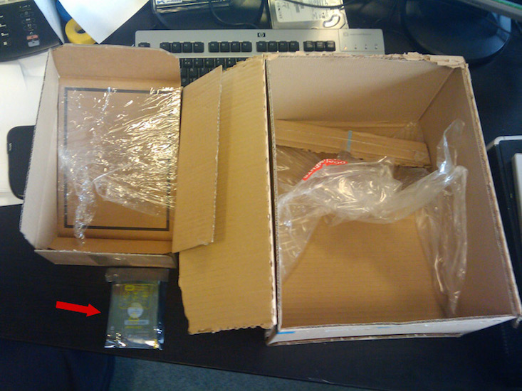
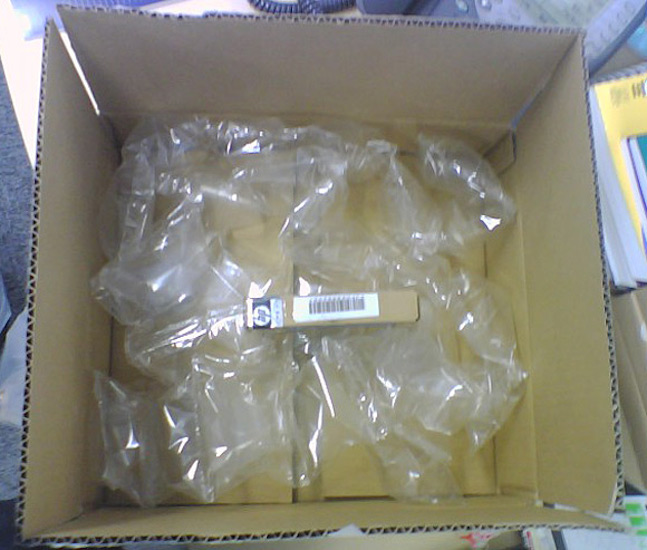

$ ping www.aptiwan.com
PING www.aptiwan.com (108.162.198.20) 56(84) bytes of data.
64 bytes from 108.162.198.20: icmp_req=1 ttl=63 time=28.3 ms
64 bytes from 108.162.198.20: icmp_req=2 ttl=63 time=27.5 ms
64 bytes from 108.162.198.20: icmp_req=3 ttl=63 time=27.1 ms
^C64 bytes from 108.162.198.20: icmp_req=4 ttl=63 time=27.9 ms
--- www.aptiwan.com ping statistics ---
4 packets transmitted, 4 received, 0% packet loss, time 3008ms
rtt min/avg/max/mdev = 27.104/27.747/28.359/0.505 ms
Need for Speed:
Packet Edition
Primer to network performance for normal people
Created by Raphaël Luta / @raphaelluta
About me
Freelance technical consultant
Web, Mobile, (Big) Data, Performance
Twitter: @raphaelluta
Linkedin: http://fr.linkedin.com/in/raphaelluta
Github: rluta
Company: www.aptiwan.com
Mail: raphael.luta at aptiwan.com
Your new application...
...as your customers see it
...as viewed by the network guys
Their job is delivery
Network characteristics
Bandwidth
Latency
Error rate
Duplex
MTU
Jitter
An alternate view of networks
Full Duplex
Bandwidth
MTU
Latency
Jitter
Error Rate
Quizz time
Firewall
Ideal conditions
Duplex must be full
Error rate should be close to 0.0 %
MTU should be as big as possible
Ethernet MTU is normalized
...the maximum length of an IP datagram sent over an Ethernet is 1500 octets.
IETF RFC 894
Bandwidth vs Latency Evolution
Over the last 20 years, bandwidth has improved 1,000 times faster than latency
Basics: Light speed
c = 300,000 km/s
(in vacuum)
That's about 190,000 km/s in fiber
approx. 5 ms per 1,000 km
| Paris - Dublin | 800 km | 4 ms |
|---|---|---|
| Paris - New York | 6,000 km | 30 ms |
| Paris - San Francisco | 9,000 km | 45 ms |
Common networks
| Bandwidth (Mbps) | Latency / RTT (ms) | |
|---|---|---|
| Ethernet | 1,000 | 0.5 |
| ADSL 2 | 20 0.7 | 30 |
| Fibre/Cable | 100 5 | 15 |
| 3G | 42 | 50 |
| EDGE | 1.5 | 300 |
| WiFi | 2-342* | 2* |
| Satellite | 1-1,000 | 500 |
Tools
Command line Tools
Basic usage
MTU testing
$ ping -s 1472 www.aptiwan.com
PING www.aptiwan.com (108.162.198.20) 1472(1500) bytes of data.
1480 bytes from 108.162.198.20: icmp_req=1 ttl=63 time=40.2 ms
1480 bytes from 108.162.198.20: icmp_req=2 ttl=63 time=41.1 ms
1480 bytes from 108.162.198.20: icmp_req=3 ttl=63 time=40.8 ms
^C
--- www.aptiwan.com ping statistics ---
3 packets transmitted, 3 received, 0% packet loss, time 2003ms
rtt min/avg/max/mdev = 40.258/40.741/41.154/0.404 ms
$ ping -s 1500 www.aptiwan.com
PING www.aptiwan.com (108.162.198.20) 1500(1528) bytes of data.
^C
--- www.aptiwan.com ping statistics ---
3 packets transmitted, 0 received, 100% packet loss, time 2017ms
Basic usage
$ traceroute www.aptiwan.com
to www.aptiwan.com (108.162.199.20), 30 hops max, 60 byte packets
1 vss-7a-6k.fr.eu (176.31.125.253) 0.629 ms * *
2 rbx-g2-a9.fr.eu (91.121.128.118) 1.246 ms 1.241 ms 1.232 ms
3 * * *
4 195.66.225.179 (195.66.225.179) 4.246 ms 4.220 ms 4.225 ms
5 108.162.199.20 (108.162.199.20) 4.212 ms 4.203 ms 4.194 ms
Service discovery / firewall testing
$ sudo traceroute -m 7 -w 1 -T -p 80 www.aptiwan.com
to www.aptiwan.com (108.162.198.20), 10 hops max, 60 byte packets
1 vss-7a-6k.fr.eu (176.31.125.253) 0.583 ms * *
2 rbx-g1-a9.fr.eu (91.121.128.114) 0.901 ms 1.143 ms 1.142 ms
3 * * *
4 * * *
5 195.66.225.179 (195.66.225.179) 4.260 ms 4.277 ms 4.261 ms
6 108.162.198.20 (108.162.198.20) 4.261 ms 4.274 ms 4.235 ms
$ sudo traceroute -m 7 -w 1 -T -p 443 www.aptiwan.com
to www.aptiwan.com (108.162.199.20), 10 hops max, 60 byte packets
1 vss-7a-6k.fr.eu (176.31.125.253) 0.561 ms * *
2 rbx-g2-a9.fr.eu (91.121.128.118) 0.964 ms 0.968 ms 1.279 ms
3 * * *
4 195.66.225.179 (195.66.225.179) 4.199 ms 4.206 ms 4.203 ms
5 * * *
6 * * *
7 * * *
Add constant latency
$ ping -c 1 -n www.google.fr
PING www.google.fr (173.194.40.215) 56(84) bytes of data.
64 bytes from 173.194.40.215: icmp_req=1 ttl=55 time=12.6 ms
--- www.google.fr ping statistics ---
1 packets transmitted, 1 received, 0% packet loss, time 0ms
rtt min/avg/max/mdev = 12.615/12.615/12.615/0.000 ms
$ sudo tc qdisc add dev eth0 root netem delay 20ms
$ sudo tc qdisc show dev eth0
qdisc netem 8004: root refcnt 2 limit 1000 delay 20.0ms
$ ping -c 1 -n www.google.fr
PING www.google.fr (173.194.40.223) 56(84) bytes of data.
64 bytes from 173.194.40.223: icmp_req=1 ttl=55 time=32.9 ms
--- www.google.fr ping statistics ---
1 packets transmitted, 1 received, 0% packet loss, time 0ms
rtt min/avg/max/mdev = 32.901/32.901/32.901/0.000 ms
Add latency + jitter
$ sudo tc qdisc change dev eth0 root netem delay 20ms 2ms 15%
$ sudo tc qdisc show dev eth0
qdisc netem 8005: root refcnt 2 limit 1000 delay 20.0ms 2.0ms 15%
Lossy connection
$ sudo tc qdisc change dev eth0 root netem loss 1
$ sudo tc qdisc show dev eth0
qdisc netem 8005: root refcnt 2 limit 1000 loss 1%
Remove shaping
$ sudo tc qdisc del dev eth0 root
$ sudo tc qdisc show dev eth0
qdisc pfifo_fast 0: root refcnt 2 bands 3 priomap 1 2 2 2 1 2 0 0 1 1 1 1 1 1 1 1
Limit bandwidth (advanced)
$ sudo tc qdisc add dev eth0 root handle 1: cbq avpkt 1000 bandwidth 10Mbit
$ sudo tc qdisc show dev eth0
qdisc cbq 1: root refcnt 2 rate 10000Kbit (bounded,isolated) prio no-transmit
GUI Tools
Back to delivery
UDP: Express delivery
- Stateless communication
- No reception guarantees
- Simple and efficient
- Can easily saturate network links
- Some well-known use cases:
- DNS, NTP, DHCP
- RTP, NFS (v1-3)
- SNMP, Syslog
TCP: Reliable delivery
- Stateful, connection oriented protocol
- Guarantees data delivery
- Error detection
- Automatic retransmission
- Preserve order
- Sophisticated flow control
- Prevents client overload
- Prevents network congestion
Typical TCP Chat
Windows Everywhere
- Windows regulate flow between sender and recipient
- Receiver window (rwnd) avoids recipient overload
- Congestion window (cwnd) prevents network saturation
- Max # of inflight bytes = min(rwnd, cwnd)
- Window changes determined by :
- Recipient available buffer (rwnd)
- Slow start (cwnd)
- Congestion avoidance (cwnd)
- Congestion window is small in a new connection
Time to Load
Time to load kB
| Name | Bw | RTT | Windows | MTU | Time | Tput (kbps) |
|---|
Tools (part 2)
Command Line Tools
$ sudo tcpdump -i eth0 -s 1500 -w /tmp/trace.pcap "tcp and port 80"
^C1847 packets captured
1849 packets received by filter
0 packets dropped by kernel
$ ss -ti
State Recv-Q Send-Q Local Address:Port Peer Address:Port
ESTAB 0 208 176.31.125.78:ssh 86.70.100.151:50669
cubic wscale:4,7 rto:244 rtt:35/4 ato:40
cwnd:10 ssthresh:7 send 3.3Mbps rcv_rtt:44 rcv_space:14480
ns397279:~$ iperf -s
------------------------------------------------------------
Server listening on TCP port 5001
TCP window size: 85.3 KByte (default)
------------------------------------------------------------
$ iperf -c ns397279.ovh.net -m -w 85kB
------------------------------------------------------------
Client connecting to ns397279.ovh.net, TCP port 5001
TCP window size: 166 KByte (WARNING: requested 83.0 KByte)
------------------------------------------------------------
[ 3] local 10.0.2.15 port 39293 connected with 176.31.125.78 port 5001
[ ID] Interval Transfer Bandwidth
[ 3] 0.0-12.3 sec 1.75 MBytes 1.20 Mbits/sec
[ 3] MSS size 1460 bytes (MTU 1500 bytes, ethernet)
GUI Tools: Wireshark
Tuning corner
Linux tuning
Adjust initial congestion window
$ sudo ip route change default via 192.168.1.1 dev eth0 metric 100 initcwnd 10
$ ip route | grep default
default via 192.168.1.1 dev eth0 metric 100 mtu 1500 initcwnd 10
Avoid slow-start after idle connections
$ sudo sysctl -w net.ipv4.tcp_slow_start_after_idle = 0
Adjust windows
$ cat /proc/sys/net/ipv4/tcp_rmem
4096 87380 6291456
# echo 4096 87380 16777216 > /proc/sys/net/ipv4/tcp_rmem
$ cat /proc/sys/net/ipv4/tcp_wmem
4096 16384 4194304
# echo 4096 65536 16777216 > /proc/sys/net/ipv4/tcp_wmem
Increase MTU
$ sudo ifconfig eth0 mtu 9000 up
$ sudo ip route change default via 192.168.1.1 dev eth0 metric 100 mtu 9000
Evil forces
Encapsulation
Using an IPSEC VPN
Payload data
Data
TCP Packet
IP
TCP
Data
VPN/L2TP
w/ NAT traversal
w/ NAT traversal
IP
UDP
ESP
UDP
L2TP
PPP
IP
TCP
Data
ESP
- Total header and trailer size at least 140 bytes
- Bandwidth loss is at least 10%, typically closer to 25-30 % for most applications
Data Bloat
Example: SOAP Request
Request statistics
| Markup size | |
|---|---|
| Content size | |
| Bytes before first content |
Just say no !
Small packets
Database join query
Objective
Retrieve a list of orders for 100 customers
Assumptions
- Average 4 orders per customer
- Average 50 bytes of info per order
- Average 20 bytes of info per customer
- Network RTT is 1 ms, bandwidth 1 Gbps
Query styles
Big join
$orders = query(select c.name, o.*
from customers c join orders o on c.id = o.custId)
Lazy join
$custs = query("select id,name from customers")
for ($custs as $c)
$orders = query("select * from orders where custId=${c->id}")
Query analysis
Big join
70 bytes * (100 * 4) = 28000 bytes payload
1 RTT connect + 3 RTT payload + query time
Total: 4 ms + query (20 packets, 28.4 kB transfer)
Lazy join
First query:
24 bytes * 100 = 2400 bytes payload
1 RTT connect + 1 RTT payload + query time
Per customer id (x100):
50 bytes * 4 = 200 bytes
1 RTT payload + query time
Total: 102 ms + query (102 packets, 26.48 kB transfer)
Use the Force !

Minimize content size
Minimization Strategies
- Eliminate noise
- White spaces, comments, EXIF profiles, etc...
- Ensure good serialization
- Beware excessive field name lengths
- Value dictionaries are your friend
- Use efficient protocols
- Protobuf, Thrift, Avro
- JSON
Reuse connections
- Each new connection costs a full RTT
- Effective bandwidth is constrained for the first 150 KB
... especially with SSL/TLS !
- TLS negociation adds at least 2 RTTs and costs a lot of CPU to set-up
Compress data
Compression trade-offs
- Big performance win for clients...
- but requires available CPU on server
- Modern CPUs can compress about 60-80 MB/s per core
- If CPU constrained, offload compression to a nearby reverse proxy
- For static data over HTTP, you can also use content negotiation
Cache aggressively
8 Fallacies of Distributed Systems
- The network is reliable.
- Latency is zero.
- Bandwidth is infinite.
- The network is secure.
- Topology doesn't change.
- There is one administrator.
- Transport cost is zero.
- The network is homogeneous.
Peter Deutsch - James Gosling
1994
1994
Thank you
Questions ?